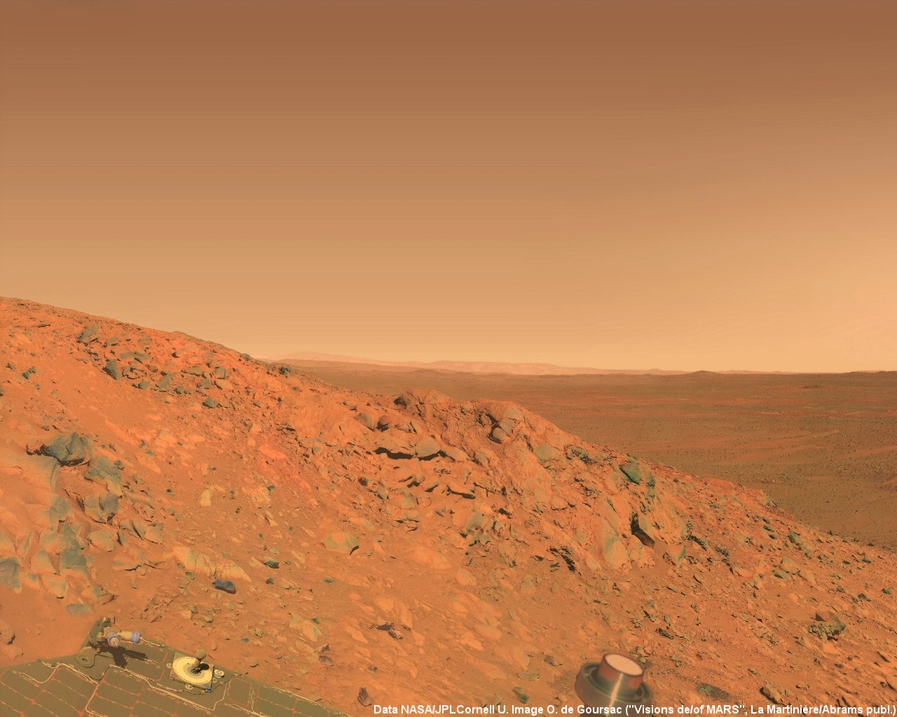
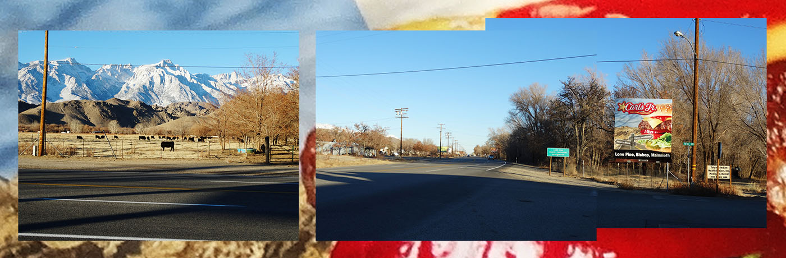

I’m Ed. I'm 26 and I live in London. I work in a gallery as an invigilator and as a chef in a pub kitchen. I would like to join the Founders and Coders course to pursue a career in web design and development. I’ve been teaching myself to code on and off for four years or so, alongside working full time. I have encountered quite a few challenges along the way, but have also taken satisfaction in attempts to solve them, or learn something from them.
I like the excitement of finding a problem to solve and the challenge of creating a solution. I have found fulfillment through making computers do things; often specifically with the internet.
>
-
King's Cross phone-in, Heath Bunting
An example of how the internet can bring people together
-
Gov.uk
Through effective and neutral design, gov.uk is an effective portal for stuff.
-

Mynearestmarginal.com
Standfirst of the appropriate length to kick in.
I believe that creativity and good design can simplify problems, and provide some solutions. But I am always aware that design is only an interface power and the infrastructure of the internet.
In the 19th century mass printing put the written word at the disposal of ordinary people for the first time. It paved the way to a revolution that altered our economy, society and the people who built them. It made our lives better, and at the same time could be used to promote hate and misery on a scale not seen before.
Digital technology, like mass printing, has already fundamentally changed our lives, and will continue to do so. It is up to those of us who build those tools, who fix the infrastructure of everyday life, to make sure it is a force that brings us together, rather than divides us.
I want to use creativity and good design to simplify our problems when it helps and to make tools that work at a human scale when needed.
I believe that we are yet to see our networked technologies reach critical utility. It’s likely to happen in my lifetime, and if possible I want to be a part of that change. For the past few years, I have taught myself HTMl, CSS, JS, and a little Python.
>
-

Eloquent JS
-
Glitch.com
-
tilde.club